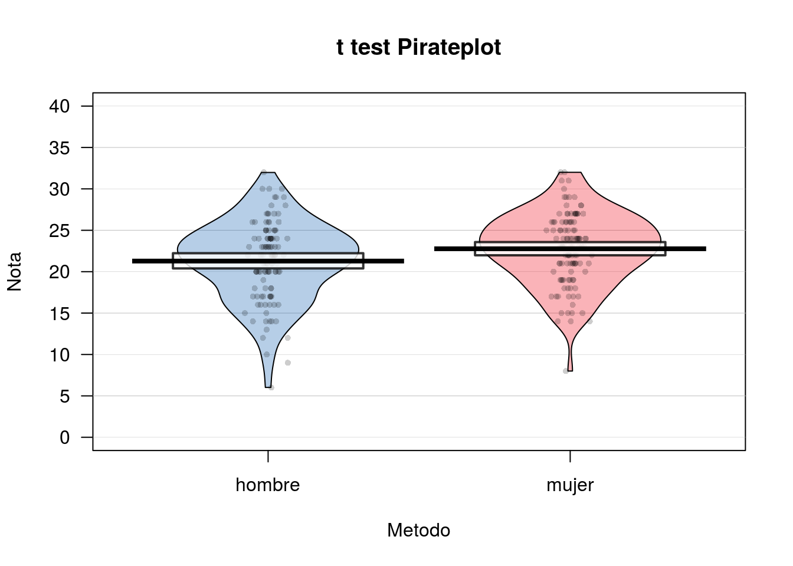
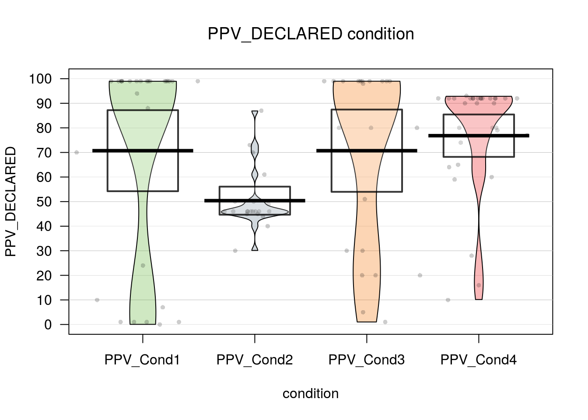
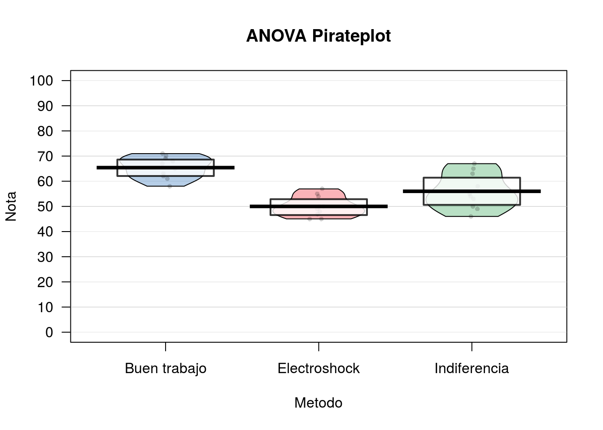

Chapter 11 Estadistica inferencial
WIP: REVISAR PAQUETE AFEX
- Permite definir variables intra y entre… y sacar posthocs!
https://cran.r-project.org/web/packages/afex/afex.pdf
a = aov_ez(“ID”, “VD”, datos_long, within = c(“VI1”, “VI2”, “VI3”))
lsmip(a, VI1 ~ VI2 * VI3)
lsmeans(a, “VI1”, contr = “pairwise”) lsmeans(a, “VI2”, contr = “pairwise”) lsmeans(a, “VI3”, contr = “pairwise”)
lsmeans(a, c(“VI1”, “VI2”, “VI3”), contr = “pairwise”)
WIP: REVISAR
Luego de tener algo parecido a una base de datos ordenada, y haber examinado y vizualizado nuestros datos, es posible que quieras analizarlos.
Para esto aprenderemos algo sobre la lógica de contrucción de modelos y formulas con los cuales podremos armar varias de las pruebas estadísticas clásicas y facilitara la comprensión de otras funciones más complejas como las relacionadas a Modelos re regresión más complejos y Modelos de Ecuaciones Estructurales.
11.1 Algo sobre Modelos y Fórmulas
En terminos sencillos, un modelo es una conjetura sobre que tipo de relación tienen las variables en juego.
Por ejemplo yo podria suponer que a medida que aumenta el consumo de alcohol, nuestra percepción de belleza decae.
R tiene sencillas fórmulas para representar este tipo de relaciones.
Si nosotros pensamos que el consumo Alcohol predice el Atractivo de la persona con la que filteamos, podemos formularlo como un modelo de la forma:
#fórmula básica
formula = "Atractivo ~ Alcohol"Si además pensamos que el Sexo tambien puede ser un predictor, modificamos el modelo inicial:
#añadir variables predictoras
formula = "Atractivo ~ Alcohol + Sexo"En el caso de que 2 variables, Alcohol y Sexo sean predictores, es posible pensar que estas pueden interaccionas. Podemos agregar la interación de varias formas:
#versión extendida
formula = "Atractivo ~ Alcohol + Sexo + Alcohol*Sexo"
#versión corta
formula = "Atractivo ~ Alcohol*Sexo"En resumen, todo lo que esta a la derecha del simbolo ~ es considerado un predictor o variable independiente, y todo lo que esta a la izquierda es una variable de resultado o una variable dependiente. No utilizamos el simbolo =, <- o == ya que no estamos ni asignando ni haciendo una equivalencia lógica, y podriamos confundir a R.
Existen casos (por ejemplo, correlación o chi-cuadrado) en donde no hay una predicción propiamente tal. En estos casos se elimina del modelo la variable de resultado:
#fórmula para modelo sin predictor o asociativo
formula = "~ Atractivo + Alcohol"11.2 Preparación de datos y packages
Para muchos de los análisis que vienen a continuación hemos creado una base de datos, la cual puedes descargar Aquí.
#Packages
if (!require('pacman')) install.packages('pacman'); library('pacman')
p_load(tidyverse, yarrr, car)
#Importar dataframe
df = read_csv("Data/ANOVA/data_file.csv")## Parsed with column specification:
## cols(
## Id = col_integer(),
## AccuracyIz = col_integer(),
## Moral = col_integer(),
## Tom = col_integer(),
## Empatia = col_integer(),
## Sexo = col_integer(),
## Edad = col_integer(),
## AccuracyDer = col_integer(),
## AdapSoc = col_integer(),
## FunEjec = col_integer()
## )#Muestra las primeras 10 observaciones
df## # A tibble: 237 x 10
## Id AccuracyIz Moral Tom Empatia Sexo Edad AccuracyDer AdapSoc
## <int> <int> <int> <int> <int> <int> <int> <int> <int>
## 1 1 34 1 29 63 0 62 13 40
## 2 2 13 NA 23 55 0 53 8 43
## 3 3 20 1 26 27 0 18 14 38
## 4 4 24 1 21 33 0 40 14 48
## 5 5 20 1 18 35 1 65 15 48
## 6 6 2 0 23 38 NA NA 12 35
## 7 7 13 1 19 38 0 56 5 16
## 8 8 27 1 15 42 1 70 8 41
## 9 9 37 1 23 36 0 43 23 38
## 10 10 27 0 20 51 1 52 9 24
## # ... with 227 more rows, and 1 more variables: FunEjec <int>#Recodificar variable sexo de numérico a factor con etiquetas
df = df %>% mutate(Sexo = ifelse(Sexo == 0, "mujer", "hombre")) %>% mutate(Sexo = as.factor(Sexo))11.3 Prueba t para muestras independientes
11.3.1 Contando la historia…
Evaluación de diferencias por Sexo en una prueba de Teoría de la mente Tom
11.3.2 Test
#En primer lugar comprobamos el supuesto de homogeneidad de varianzas
#levene test {car} para homogeneidad de las varianzas
leveneTest(df$Tom ~ df$Sexo)## Levene's Test for Homogeneity of Variance (center = median)
## Df F value Pr(>F)
## group 1 0.7558 0.3856
## 228#Ingresamos nuestro modelo en la función t.test()
t.test(Tom ~ Sexo, df, var.equal = T, paired = F)##
## Two Sample t-test
##
## data: Tom by Sexo
## t = -2.4618, df = 228, p-value = 0.01456
## alternative hypothesis: true difference in means is not equal to 0
## 95 percent confidence interval:
## -2.6763463 -0.2967329
## sample estimates:
## mean in group hombre mean in group mujer
## 21.28070 22.76724#Reporte descriptivo y Vizualización
df %>%
na.omit(Tom) %>%
group_by(Sexo) %>%
summarise(mean = mean(Tom), sd = sd(Tom))## mean sd
## 1 22.11574 4.495014pirateplot(Tom ~ Sexo,
data = df,
ylim = c(0, 40),
xlab = "Metodo",
ylab = "Nota",
main = "t test Pirateplot",
point.pch = 16,
pal = "basel")
11.4 Prueba t para muestras dependientes
11.4.1 Contando la historia…
En una tarea de disparo a objetivos, queremos evaluar si existen diferencias en la precisión de los sujetos a objetivos que aparecen a la Izquierda (AccuracyIz) o a la Derecha (AccuracyDer) del monitor.
11.4.2 Test
#Ingresamos nuestro modelo en la función t.test()
t.test(df$AccuracyIz, df$AccuracyDer, paired = T)##
## Paired t-test
##
## data: df$AccuracyIz and df$AccuracyDer
## t = 22.904, df = 233, p-value < 2.2e-16
## alternative hypothesis: true difference in means is not equal to 0
## 95 percent confidence interval:
## 10.05377 11.94623
## sample estimates:
## mean of the differences
## 1111.5 Correlación de Pearson
11.5.1 Contando la historia…
Se desea evaluar si existe alguna relación entre Teoria de la Mente (Tom) y el grado de Empatía de los sujetos (Empatia).
11.5.2 Test
#Correlación de Pearson
cor.test(~ Tom + Empatia, data = df)##
## Pearson's product-moment correlation
##
## data: Tom and Empatia
## t = 1.9789, df = 229, p-value = 0.04903
## alternative hypothesis: true correlation is not equal to 0
## 95 percent confidence interval:
## 0.0005956093 0.2544818239
## sample estimates:
## cor
## 0.1296633#Visualizar Diagrama de Dispersión
ggplot(df, aes(Tom, Empatia)) +
theme_bw() +
geom_point(shape=16, col = transparent("red", .4))## Warning: Removed 6 rows containing missing values (geom_point).
#Selecione un subconjunto de variables para la correlación multiple
cordata = df %>% select(-Id,-Moral,-Sexo,-AccuracyIz,-AccuracyDer,-Edad)
#carga libreria Hmisc
p_load(Hmisc)
#correlación multiple
rcorr(as.matrix(cordata), type = "pearson")## Tom Empatia AdapSoc FunEjec
## Tom 1.00 0.13 0.16 0.10
## Empatia 0.13 1.00 0.25 0.06
## AdapSoc 0.16 0.25 1.00 0.15
## FunEjec 0.10 0.06 0.15 1.00
##
## n
## Tom Empatia AdapSoc FunEjec
## Tom 232 231 226 231
## Empatia 231 235 229 234
## AdapSoc 226 229 231 230
## FunEjec 231 234 230 236
##
## P
## Tom Empatia AdapSoc FunEjec
## Tom 0.0490 0.0130 0.1331
## Empatia 0.0490 0.0001 0.3760
## AdapSoc 0.0130 0.0001 0.0204
## FunEjec 0.1331 0.3760 0.020411.6 Regresión Simple
11.6.1 Contando la historia…
Evaluaremos como las Funciones ejecutivas (FunEjec) pueden predecir la Precisión a objetivos en una tarea atencional (Accuracy).
Para esto primero añadiremos una nueva variable Accuracy la cual será el promedio de precisión para los objetivos Derechos (AccuracyDer) e Izquierdos (AccuracyIz). Lo realizaremos con la función mutate antes revisada en el apartado de manipulación de datos.
Además filtraremos a los sujetos con puntajes bajos (menos de 50 puntos).
#Creamos nueva variable "Accuracy" con la función mutate() {dplyr}
df = df %>% mutate(Accuracy = (AccuracyIz + AccuracyDer)/2)
#Utilizar observaciones con puntajes de Funcion ejecutiva sobre 50 puntos.
df = df %>% filter(FunEjec > 50)11.6.2 Test
#Insertamos nuestra fórmula al Modelo de Regresión Simple
fit = lm(Accuracy ~ FunEjec, df)
#Resumen de Coeficientes y Parametros del modelo
summary(fit)##
## Call:
## lm(formula = Accuracy ~ FunEjec, data = df)
##
## Residuals:
## Min 1Q Median 3Q Max
## -11.587 -3.087 0.413 2.163 10.038
##
## Coefficients:
## Estimate Std. Error t value Pr(>|t|)
## (Intercept) 5.76939 2.83753 2.033 0.0457 *
## FunEjec 0.06252 0.01457 4.292 5.36e-05 ***
## ---
## Signif. codes: 0 '***' 0.001 '**' 0.01 '*' 0.05 '.' 0.1 ' ' 1
##
## Residual standard error: 4.729 on 73 degrees of freedom
## (2 observations deleted due to missingness)
## Multiple R-squared: 0.2015, Adjusted R-squared: 0.1905
## F-statistic: 18.42 on 1 and 73 DF, p-value: 5.363e-05#Intevalos de Confianza de los parámetros del modelo
confint(fit, level = 0.95)## 2.5 % 97.5 %
## (Intercept) 0.11419463 11.42458615
## FunEjec 0.03349037 0.09155961#Visualizar Diagrama de Dispersión para Regresión
ggplot(df, aes(FunEjec, Accuracy)) +
theme_bw() +
geom_point(shape = 16, col = transparent("black", .4)) +
geom_smooth(method = lm , color = "red", se = T)## Warning: Removed 2 rows containing non-finite values (stat_smooth).## Warning: Removed 2 rows containing missing values (geom_point).11.7 Análsis de la Varianza (1 Factor)
Esta vez trabajaremos con otra base de datos, la cual puedes descargar Aquí. Se recomienda en esta oportunidad limpiar nuestro espacio de trabajo. Para esto podemos presionar Ctrl + Shift + F10 o utilizar la función:
rm(list=ls())11.7.1 Preparación de datos y packages
#Packages
if (!require('pacman')) install.packages('pacman'); library('pacman')
p_load(tidyverse, stats, car, apaTables)
#Importar dataframe
df = read_csv("Data/ANOVA/data_aov1.csv")## Parsed with column specification:
## cols(
## Metodo = col_integer(),
## Nota = col_integer()
## )#Muestra las primeras 10 observaciones
df## # A tibble: 30 x 2
## Metodo Nota
## <int> <int>
## 1 1 50
## 2 1 45
## 3 1 48
## 4 1 47
## 5 1 45
## 6 1 49
## 7 1 50
## 8 1 54
## 9 1 57
## 10 1 55
## # ... with 20 more rows#Recodificar variable Metodo de numérico a factor con etiquetas
df = df %>% mutate(Metodo = ifelse(Metodo == 1, "Electroshock", ifelse(Metodo == 2, "Indiferencia", "Buen trabajo"))) %>% mutate(Metodo = as.factor(Metodo))11.7.2 Contando la historia…
Se desea evaluar que métodos pueden contribuir (o no) al aprendizaje de estadísticas en R. Para esto tenemos las variables Metodo (si se uso Electroshock, la fria Indiferencia o un “Buen trabajo!”) y la Nota nota que se obtuvo en el curso.
11.7.3 Test
#Introducimos la formula al Modelo con la función de ANOVA aov()
fit = aov(Nota ~ Metodo, df)
#Summario de Parámetros y Coeficientes
summary(fit)## Df Sum Sq Mean Sq F value Pr(>F)
## Metodo 2 1205.1 602.5 21.01 3.15e-06 ***
## Residuals 27 774.4 28.7
## ---
## Signif. codes: 0 '***' 0.001 '**' 0.01 '*' 0.05 '.' 0.1 ' ' 1#levene test {car} para homogeneidad de las varianzas
leveneTest(df$Nota ~ df$Metodo)## Levene's Test for Homogeneity of Variance (center = median)
## Df F value Pr(>F)
## group 2 1.7343 0.1956
## 27#Comparaciones Multiples mediante función TukeyHSD() {stats}
TukeyHSD(fit)## Tukey multiple comparisons of means
## 95% family-wise confidence level
##
## Fit: aov(formula = Nota ~ Metodo, data = df)
##
## $Metodo
## diff lwr upr p adj
## Electroshock-Buen trabajo -15.4 -21.33834579 -9.461654 0.0000020
## Indiferencia-Buen trabajo -9.4 -15.33834579 -3.461654 0.0015175
## Indiferencia-Electroshock 6.0 0.06165421 11.938346 0.0472996#Reporte descriptivo y Vizualización
df %>%
group_by(Metodo) %>%
summarise(mean = mean(Nota), sd = sd(Nota))## mean sd
## 1 57.13333 8.261808pirateplot(Nota ~ Metodo,
data = df,
ylim = c(0, 100),
xlab = "Metodo",
ylab = "Nota",
main = "ANOVA Pirateplot",
point.pch = 16,
pal = "basel")11.7.4 Tablas
apa.1way.table(iv = Metodo, dv = Nota, data = df, filename = "Resultados/Figure1_APA.doc", table.number = 1)##
##
## Table 1
##
## Descriptive statistics for Nota as a function of Metodo.
##
## Metodo M SD
## Buen trabajo 65.40 4.30
## Electroshock 50.00 4.14
## Indiferencia 56.00 7.10
##
## Note. M and SD represent mean and standard deviation, respectively.
## apa.aov.table(fit, filename = "Resultados/Figure2_APA.doc",table.number = 2)##
##
## Table 2
##
## ANOVA results using Nota as the dependent variable
##
##
## Predictor SS df MS F p partial_eta2
## (Intercept) 42771.60 1 42771.60 1491.26 .000
## Metodo 1205.07 2 602.53 21.01 .000 .61
## Error 774.40 27 28.68
## CI_90_partial_eta2
##
## [.36, .71]
##
##
## Note: Values in square brackets indicate the bounds of the 90% confidence interval for partial eta-squared11.8 Análsis de la Varianza (2 Factores)
11.8.1 Descarga
Esta vez nuevamente trabajaremos con otra base de datos, la cual puedes descargar Aquí. Se recomienda nuevamente limpiar nuestro espacio de trabajo. Para esto podemos presionar Ctrl + Shift + F10 o utilizar la función:
rm(list = ls())11.8.2 Preparación de datos y packages
#Packages
if (!require('pacman')) install.packages('pacman'); library('pacman')
p_load(tidyverse, yarrr, car, stats)
#Importar dataframe
df = read_csv("Data/ANOVA/data_aov2.csv")## Parsed with column specification:
## cols(
## Sexo = col_integer(),
## Alcohol = col_integer(),
## Atractivo = col_integer()
## )#Muestra las primeras 10 observaciones
df## # A tibble: 32 x 3
## Sexo Alcohol Atractivo
## <int> <int> <int>
## 1 1 0 65
## 2 1 0 70
## 3 1 0 60
## 4 1 0 60
## 5 1 0 60
## 6 1 0 55
## 7 1 0 60
## 8 1 0 55
## 9 1 1 55
## 10 1 1 65
## # ... with 22 more rows#Recodificar variable Sexo y Alcohol de numérico a factor con etiquetas
df = df %>% mutate(Sexo = ifelse(Sexo == 0, "mujer", "hombre")) %>% mutate(Sexo = as.factor(Sexo))
df = df %>% mutate(Alcohol = ifelse(Alcohol == 0, "No consume", "Tres Shop")) %>% mutate(Alcohol = as.factor(Alcohol))11.8.3 Contando la historia…
A veces cuando bebemos bebidas espirituosas, podemos sobreestimar el atractivo de otras personas. Esto en psicología lo conocemos como “Beer Glass Effect”. Deseamos ver este efecto, pero además ver si el Sexo influye también.
Para esto tenemos las variables Alcohol (Si ha bebido o no), el Sexo del bebedor y la puntuación de Atractivo de la persona con la que flirtea aquella noche.
11.8.4 Test
#Ajustamos el modelo con la funcion de ANOVA aov()
fit = aov(Atractivo ~ Sexo * Alcohol, df)
#Summario de Parámetros y Coeficientes
summary(fit)## Df Sum Sq Mean Sq F value Pr(>F)
## Sexo 1 488.3 488.3 6.54 0.0163 *
## Alcohol 1 2363.3 2363.3 31.65 5.03e-06 ***
## Sexo:Alcohol 1 1582.0 1582.0 21.19 8.20e-05 ***
## Residuals 28 2090.6 74.7
## ---
## Signif. codes: 0 '***' 0.001 '**' 0.01 '*' 0.05 '.' 0.1 ' ' 1#Comparaciones Multiples mediante función TukeyHSD() {stats}
TukeyHSD(fit)## Tukey multiple comparisons of means
## 95% family-wise confidence level
##
## Fit: aov(formula = Atractivo ~ Sexo * Alcohol, data = df)
##
## $Sexo
## diff lwr upr p adj
## mujer-hombre -7.8125 -14.07042 -1.554575 0.0162548
##
## $Alcohol
## diff lwr upr p adj
## Tres Shop-No consume -17.1875 -23.44542 -10.92958 5e-06
##
## $`Sexo:Alcohol`
## diff lwr upr p adj
## mujer:No consume-hombre:No consume 6.250 -5.546177 18.046177 0.4820693
## hombre:Tres Shop-hombre:No consume -3.125 -14.921177 8.671177 0.8869596
## mujer:Tres Shop-hombre:No consume -25.000 -36.796177 -13.203823 0.0000186
## hombre:Tres Shop-mujer:No consume -9.375 -21.171177 2.421177 0.1564908
## mujer:Tres Shop-mujer:No consume -31.250 -43.046177 -19.453823 0.0000004
## mujer:Tres Shop-hombre:Tres Shop -21.875 -33.671177 -10.078823 0.0001309#Reporte descriptivo y Vizualización
df %>%
group_by(Alcohol,Sexo) %>%
summarise(mean = mean(Atractivo), sd = sd(Atractivo))## mean sd
## 1 55.15625 14.50719df %>%
group_by(Alcohol) %>%
summarise(mean = mean(Atractivo), sd = sd(Atractivo))## mean sd
## 1 55.15625 14.50719df %>%
group_by(Sexo) %>%
summarise(mean = mean(Atractivo), sd = sd(Atractivo))## mean sd
## 1 55.15625 14.50719pirateplot(Atractivo ~ Sexo + Alcohol,
data = df,
ylim = c(0, 100),
xlab = "Sex*Alcohol",
ylab = "Attractiveness Score",
main = "ANOVA Pirateplot",
point.pch = 16,
pal = "basel")
11.8.5 Tablas
apa.2way.table(iv1 = Sexo, iv2 = Alcohol, dv = Atractivo, data = df, filename = "Resultados/Figure3_APA.doc", table.number = 3)##
##
## Table 3
##
## Means and standard deviations for Atractivo as a function of a 2(Sexo) X 2(Alcohol) design
##
## Alcohol
## No consume Tres Shop
## Sexo M SD M SD
## hombre 60.62 4.96 57.50 7.07
## mujer 66.88 10.33 35.62 10.84
##
## Note. M and SD represent mean and standard deviation, respectively.apa.aov.table(fit, filename = "Resultados/Figure4_APA.doc",table.number = 4)##
##
## Table 4
##
## ANOVA results using Atractivo as the dependent variable
##
##
## Predictor SS df MS F p partial_eta2
## (Intercept) 29403.12 1 29403.12 393.80 .000
## Sexo 156.25 1 156.25 2.09 .159 .07
## Alcohol 39.06 1 39.06 0.52 .475 .02
## Sexo x Alcohol 1582.03 1 1582.03 21.19 .000 .43
## Error 2090.62 28 74.66
## CI_90_partial_eta2
##
## [.00, .24]
## [.00, .16]
## [.19, .58]
##
##
## Note: Values in square brackets indicate the bounds of the 90% confidence interval for partial eta-squared